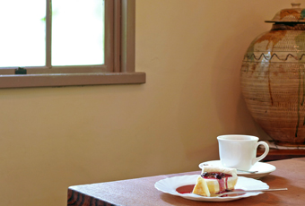
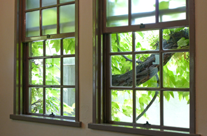
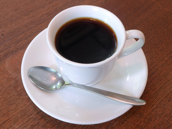
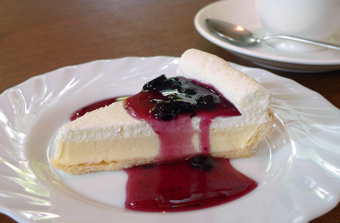

SHOP INFORMATIONcafé EL GRECO
歴史ある大正ロマンの喫茶店

倉敷の代表的な観光スポットである美観地区に店を構える「喫茶エル・グレコ」は、50年以上の歴史がある喫茶店。
元々は、大原美術館の設立者である大原孫三郎の事務所として大正末期に建てられたものです。
「大原美術館で絵を観た人たちが休むための場所がほしい」という大原孫三郎の長男・總一郎の思いを受け、現オーナーの母・浦江さんが喫茶店として昭和34年に開店しました。
店内の見所

上げ下げ窓や天井、大原家の家紋が入った扉などは当時のまま。随所に大正の雰囲気を感じることができます。
店内にはエル・グレコの複製画や立派な壷が飾られ、トンボ玉や倉敷ガラス、七宝などの作品が展示されているコーナーもあるので、お茶を楽しみながら芸術も楽しむことができます。
こだわりの美味しいコーヒー

オープン当初からずっと守り続けているというこだわりのオリジナルコーヒーは、モカを主体にした4種類の豆で作ったブレンドコーヒー。丁寧にネルドリップされたコーヒーは、柔らかくマイルドな味に仕上がっています。
レアチーズケーキなら「喫茶エル・グレコ」

爆発的にヒットしたという自慢のレアチーズケーキは、県外からわざわざ食べに来るほどの人気ぶり。
オーナーがニューヨークで毎日のように食べていたというお気に入りのチーズケーキを、知人のパティシエにお願いして再現してもらったそうです。とろけるような軽い舌触りで、さっぱりとした上品な甘さ。トッピングされたブルーベリーソースとの相性も抜群です。
ここにあるのは、いつ訪れても変わらないやさしさ
美観地区内、倉敷駅から歩いて約10分、大原美術館の隣にある「喫茶エル・グレコ」。
外壁の全面が蔦で覆われた建物は観光客の目を引きます。蔦の隙間から優しい光が差し込む店内には、ケヤキの大きなテーブルが用意されていて、ゆったりとくつろげる空間になっています。観光で歩き疲れた時に、そして絵画鑑賞の余韻を楽しむ時にはぜひ訪れてほしい場所です。
Googleマップでみる
一覧に戻る